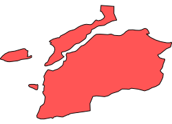
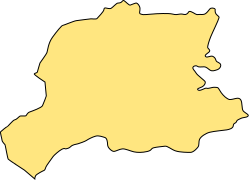

Trabzon823323: Sekiz yüz yirmi bin üç yüz yirmi üç

Çanakkale503006: Beş yüz üç bin altı

Bayburt80000: Seksen bin
Bildiklerimizi Genişletelim
Dünya nüfusu 2025 yılında 8 275 310 609'a ulaştı. Sayının okunuşunu inceleyip soruları cevaplayınız.8275310609 : Sekiz milyar iki yüz yetmiş beş milyon üç yüz on bin altı yüz dokuz
a. Sayıda nerelerde boşluk bırakılmış?Sağdan itibaren her 3 rakamda bir boşluk bırakılmıştır.b. Daha önce duymadığınuz kelimeler var mı?Milyar ve milyon kelimelerini ilk kez duyduk.c. Sayıları okurken nasıl bir yöntem kullanılmış?Önce her bölükteki sayı okunmuş daha sonra bölüğün adı söylenmiştir.
Okuyalım 1
Verilen sayıların okunuşlarını yazınız.
a. Dünya üzerindeki toplam ağaç sayısı 3 040 120 450'dir.3040120450 : Üç milyar kırk milyon yüz yirmi bin dört yüz elli.
b. İnsan DNA'sındaki toplam baz sayısı 3 200 400 150'dir3200400150 : Üç milyar iki yüz milyon dört yüz bin yüz elli.
Okuyalım 1
c. 2026 yılında tüm dünyadaki telefon kullanıcısı 4 930 250 800'dür.4930250800 : Dört milyar dokuz yüz otuz milyon iki yüz elli bin sekiz yüz.
ç. Bir arama motorunda günlük yapılan arama sayısı 8 500 210 350'dir8500210350 : Sekiz milyar beş yüz milyon iki yüz on bin üç yüz elli.
d. 80 yıl yaşayan bir insanın alacağı ortalam nefes sayısı 1 051 200 320'dir1051200320 : Bir milyar elli bir milyon iki yüz bin üç yüz yirmi.